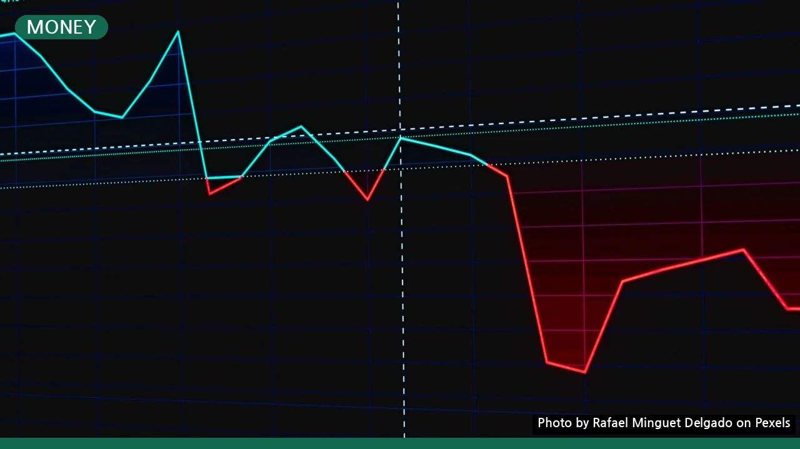
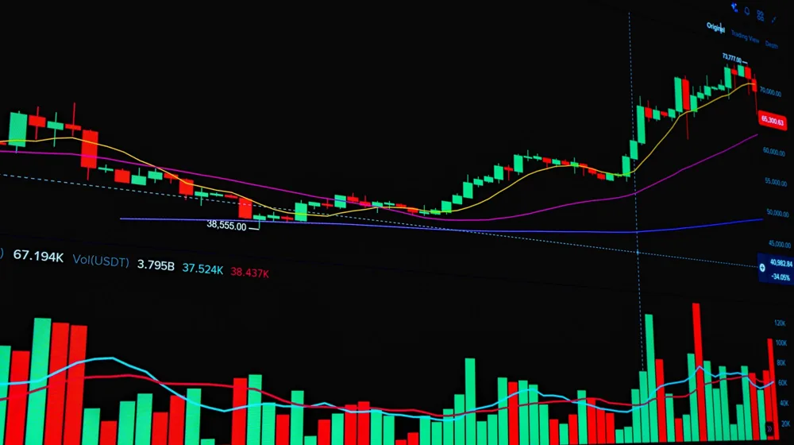

배당주 투자, 장점만 보고 시작했다간? 손실 피하는 완벽 비교 가이드
사진: Rafael Minguet Delgado / Pexels (무료 이미지, 출처 표기)
배당주 투자의 기본 이해: 무엇이 다른가요?

배당주 투자를 고려 중이신가요? 꾸준한 현금 흐름을 기대하며 시작했다가 예상치 못한 위험에 직면할 수도 있습니다. 이 글에서는 배당주 투자의 명확한 장점과 간과하기 쉬운 단점을 심층적으로 비교하고, 성공적인 투자를 위한 실질적인 전략을 제시합니다. 막연한 기대 대신 정확한 정보를 바탕으로 현명한 투자 결정을 내리도록 돕겠습니다.
배당주 투자는 기업이 벌어들인 이익의 일부를 주주들에게 정기적으로 분배하는 '배당금'에 초점을 맞춘 투자 방식입니다. 주가 상승을 통한 시세 차익 외에, 주기적인 현금 수익을 얻는 것이 주된 목적입니다. 일반적으로 성장이 정체되었거나 성숙기에 접어든 기업들이 안정적인 배당을 지급하는 경향이 있습니다.
배당주 투자를 이해할 때 중요한 지표는 두 가지입니다. 첫째는 배당수익률(Dividend Yield)로, 현재 주가 대비 연간 배당금이 차지하는 비율을 의미합니다. 둘째는 배당성향(Dividend Payout Ratio)으로, 기업이 순이익 중 배당금으로 지급하는 비율을 나타냅니다. 이 비율이 너무 높으면 기업의 재투자 여력이 부족할 수 있습니다.
배당주 투자의 핵심 장점: 왜 매력적인가요?
배당주 투자는 여러 면에서 매력적인 투자처로 꼽힙니다. 특히 은퇴 생활자나 안정적인 현금 흐름을 원하는 투자자에게 더욱 그렇습니다. 대표적인 장점은 다음과 같습니다.
- 정기적인 현금 흐름: 주가 변동과 무관하게 꾸준히 배당금을 받아 생활비나 재투자 자금으로 활용할 수 있습니다. 이는 특히 변동성이 큰 시장에서 심리적 안정감을 제공합니다.
- 포트폴리오 안정성: 배당을 꾸준히 지급하는 기업은 대체로 재무 구조가 탄탄하고 사업 모델이 안정적인 경우가 많습니다. 이는 시장 하락기에도 주가 방어에 도움이 될 수 있습니다.
- 복리 효과 극대화: 받은 배당금을 다시 배당주에 재투자함으로써 투자 원금을 늘리고, 이는 다음 배당금 증대로 이어져 장기적으로 복리 효과를 극대화할 수 있습니다.
- 인플레이션 헤지: 기업 이익이 성장하면 배당금도 함께 늘어날 가능성이 있어, 물가 상승에 따른 화폐 가치 하락을 어느 정도 상쇄하는 효과를 기대할 수 있습니다.
배당주 투자의 간과하기 쉬운 단점: 무엇을 조심해야 할까요?
배당주는 매력적이지만, 장점만 보고 투자하기에는 주의해야 할 점도 많습니다. 다음은 배당주 투자 시 고려해야 할 주요 단점들입니다.
- 성장성 제한: 배당을 많이 지급하는 기업은 이익의 상당 부분을 배당으로 지출하므로, 성장 동력 확보를 위한 재투자 여력이 부족할 수 있습니다. 이는 장기적인 주가 상승 여력을 제한하는 요인이 됩니다.
- 배당금 삭감 위험: 기업의 실적 악화나 경영 환경 변화로 언제든 배당금이 줄거나 중단될 수 있습니다. 이는 주가 하락으로 이어져 배당 수익과 시세 차익 모두를 잃는 '배당의 함정'에 빠질 수 있습니다.
- 세금 문제: 배당 소득에는 배당소득세(현재 15.4%, 지방소득세 포함)가 부과됩니다. 금융소득종합과세 대상이 될 경우 세금 부담이 커질 수 있어, 개인의 투자 규모에 따른 세금 전략이 필요합니다.
- 배당락 효과: 배당 기준일 이후 배당락(ex-dividend date)일에는 배당받을 권리가 없어지므로 주가가 하락하는 경향이 있습니다. 단기 투자를 할 경우 배당을 받더라도 주가 하락으로 전체 수익률이 마이너스가 될 수 있습니다.
- 기회비용 발생: 배당주에 투자한 자금은 고성장 기술주 등 다른 투자처에 투자할 기회를 놓치는 기회비용을 발생시킵니다. 자신의 투자 목표와 성향에 맞는 선택이 중요합니다.
고배당주 vs. 성장주, 어떤 선택이 현명할까?
많은 투자자가 안정적인 배당 수익과 높은 성장 잠재력 사이에서 고민합니다. 고배당주와 성장주는 각각 다른 투자 매력과 위험을 가지고 있으므로, 자신의 투자 목표와 기간에 맞춰 선택하는 것이 중요합니다. 2026년 10월 기준으로 두 투자 방식의 일반적인 특징을 비교해 보았습니다.
이 비교는 일반적인 경향을 나타내며, 개별 기업의 특성에 따라 다를 수 있습니다. 두 가지를 적절히 혼합하여 자신만의 균형 잡힌 포트폴리오를 구성하는 전략도 고려해 볼 수 있습니다.
성공적인 배당주 투자를 위한 실전 체크리스트
배당주 투자를 시작하기 전에 다음 체크리스트를 활용하여 신중하게 기업을 분석해 보세요. 이 과정은 배당의 함정을 피하고 안정적인 수익을 창출하는 데 도움이 됩니다.
- 배당 내역 확인: 최소 5년 이상 꾸준히 배당금을 지급했는지, 그리고 배당금이 증가하는 추세인지 확인합니다. 갑작스러운 고배당은 일회성일 수 있습니다.
- 배당수익률과 배당성향 분석: 배당수익률이 시장 평균 대비 높은지, 그리고 배당성향이 너무 높아서 기업의 재투자 여력을 침해하지 않는지 점검합니다. 2026년 10월 기준으로 과거와 현재의 추이를 함께 살펴보세요.
- 기업 재무 건전성 평가: 부채 비율, 현금 흐름, 이익 성장률 등 재무제표를 통해 기업이 안정적인 수익을 지속적으로 창출할 수 있는지 확인합니다. 금융감독원 전자공시시스템(DART) 등을 통해 공식 자료를 확인하는 것이 좋습니다.
- 산업 전망 및 경쟁 우위: 해당 기업이 속한 산업의 성장 가능성과 기업의 독점적인 경쟁 우위가 있는지 평가합니다. 이는 장기적인 배당 지급 능력과 직결됩니다.
- 분산 투자: 특정 산업이나 소수의 기업에 집중 투자하기보다, 여러 섹터의 배당주에 분산 투자하여 위험을 줄입니다.
배당주 투자, 이것만은 꼭 기억하세요 (전략 및 주의사항)
배당주 투자는 단기적인 시세 차익보다는 장기적인 안목으로 접근할 때 그 진정한 가치를 발휘합니다. 다음 전략과 주의사항을 숙지하여 성공적인 배당주 투자를 이어가세요.
첫째, '배당의 함정'에 빠지지 않도록 주의해야 합니다. 단기적으로 높은 배당수익률을 제시하는 기업은 일시적인 요인이나 기업 가치 하락에 따른 것일 수 있습니다. 지속 가능한 배당 능력과 기업의 본질 가치를 함께 고려해야 합니다.
둘째, 배당금을 재투자하는 전략을 적극적으로 활용하세요. 받은 배당금을 다시 주식을 매수하는 데 사용하면 복리 효과를 극대화하여 장기적으로 더 큰 자산 증식을 이룰 수 있습니다. 많은 증권사에서 배당 재투자 서비스를 제공하고 있습니다.
셋째, 시장 상황과 기업의 실적 변화를 꾸준히 모니터링하는 것이 중요합니다. 아무리 안정적인 기업이라도 영원히 높은 배당을 보장하지는 않습니다. 정기적인 재무 상태 확인과 뉴스 분석을 통해 선제적으로 대응해야 합니다.
배당주 투자는 현금 흐름과 자산 증식을 동시에 추구할 수 있는 매력적인 방법입니다. 하지만 충분한 분석과 장기적인 관점 없이는 기대했던 수익을 얻기 어려울 수 있습니다. 언제나 '투자 결정은 본인의 책임'이라는 점을 명심하고, 전문가의 조언을 참고하며 신중하게 투자하시길 권장합니다.
🔗 이 글도 함께 보면 좋아요: 대출 막히기 전에 DSR 꼭 확인하세요: 초보자를 위한 핵심 가이드